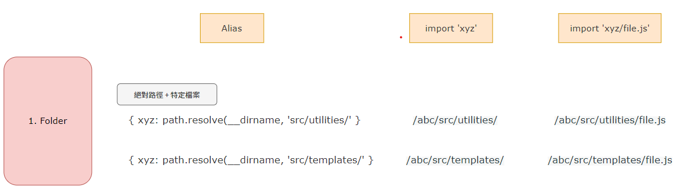
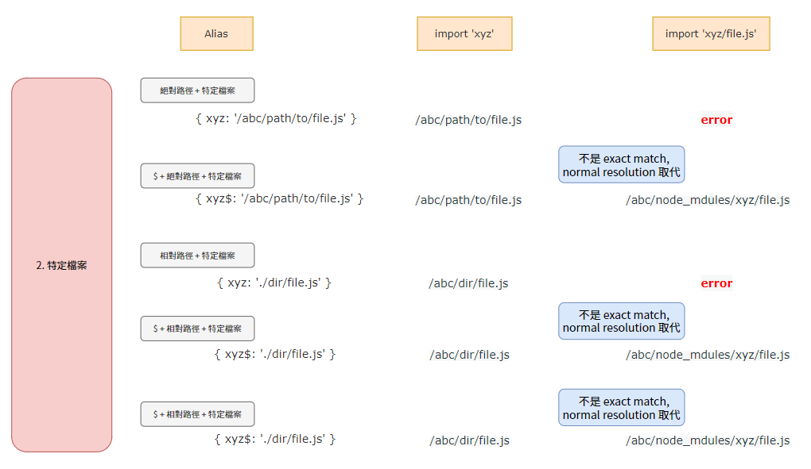
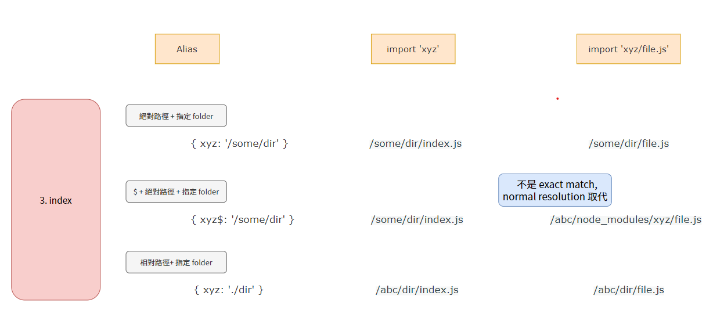
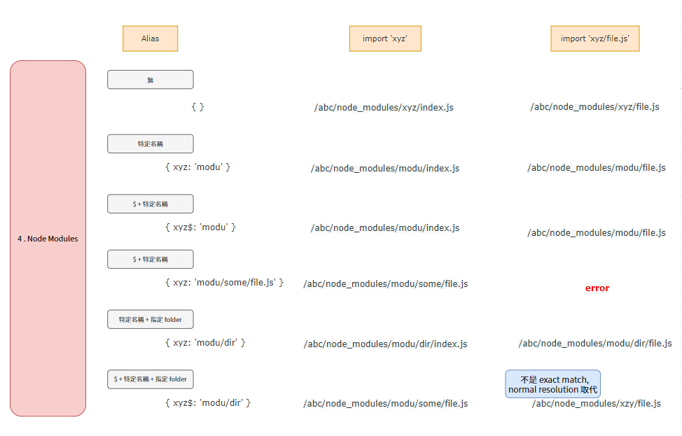

Part 1 - Intro
在檔案數量眾多的情況下，引用檔案時，常會遇到路徑過長問題，例如：
import Utils from '../../../utils';
import Button from '../../../../src/components/button';
import Calendar from '../../../../src/components/shared/Calendar';
這樣不但輸入上很冗長，且也造成路徑不便閱讀
在 Webpack 環境下，我們可以設定一些常用的路徑，省去多層相對路徑的困擾
在 webpack.config.js 中，可以做以下的設定：
module.exports = {
...,
resolve: {
alias: {
'@component': './src/components/',
'@shared': './src/components/shared/',
'@utils': './utils',
'@submodules': './submodules/',
'@json': './src/components/json',
}
}
...,
}
Part 2 - Alias Forms
在設定 alias 時，引入的形式可分為 4 種
1. 資料夾
2. 特定檔案
3. Index.js
4. Node Modules
( 在此 root 資料夾為 abc )
1. 資料夾

利用 webpack alias 可以指定到特定的資料夾，若想要引入特定檔案，則可以指定 alias 底下的檔案，可以省去繁複相對路徑的困擾
2. 特定檔案

- 絕對路徑 + 特定檔案
直接引入即可使用，
但已為一檔案，引入 alias 下的檔案會顯示錯誤
- $ + 絕對路徑 + 特定檔案
直接引入即可使用，
但已為一檔案，引入 alias 下的檔案會被視為 not EXACT MATCH，
會直接忽略 alias 設定，直接視為 node modules 下的 xyz 的 file.js
- 相對路徑 + 特定檔案
以 root 為起始，指定到相對下的檔案路徑，
但已為一檔案，引入 alias 下的檔案會顯示錯誤
- $ + 相對路徑 + 特定檔案
以 root 為起始，指定到相對下的檔案路徑，
但已為一檔案，引入 alias 下的檔案會被視為 not EXACT MATCH，
會直接忽略 alias 設定，直接視為 node modules 下的 xyz 的 file.js
3. Index
引入資料夾的位置，但最後不加反斜線，即可引入 index.js 檔
- 絕對路徑 + 特定檔案
直接引入即可使用，
index
- $ + 絕對路徑 + 特定檔案
直接引入即可使用，引入的檔案為/some/dir/index.js
但已為一檔案，引入 alias 下的檔案會被視為 not EXACT MATCH，
會直接忽略 alias 設定，直接視為 node modules 下的 xyz 的 file.js
- 相對路徑 + 特定檔案
以 root 為起始，指定到相對下的檔案路徑，
但已為一檔案，引入 alias 下的檔案會顯示錯誤
4. Node Modules

- 無
直接引入即可使用
- 特定名稱
如果為直接引入，引入的檔案為 index/abc/node_modules/modu/index.js
若引入名稱下的檔案，則引入的為該檔案/abc/node_modules/modu/file.js
- $ + 特定名稱
如果為直接引入，引入的檔案為 index/abc/node_modules/modu/index.js
若引入名稱下的檔案，則引入的為該檔案/abc/node_modules/modu/file.js
- 特定名稱下的檔案
直接引入即可，
但已為一檔案，引入 alias 下的檔案會顯示錯誤
- 特定名稱 + 指定 folder
直接引入為該 folder 下的 index.js，
若引入其下檔案則為該檔案
- $ + 特定名稱 + 指定 folder
直接引入為該 folder 下的 index.js，
但已為一檔案，引入 alias 下的檔案會被視為 not EXACT MATCH，
會直接忽略 alias 設定，直接視為 node modules 下的 xyz 的 file.js